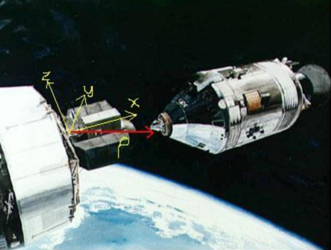
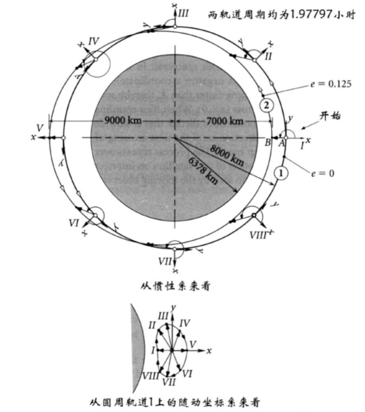
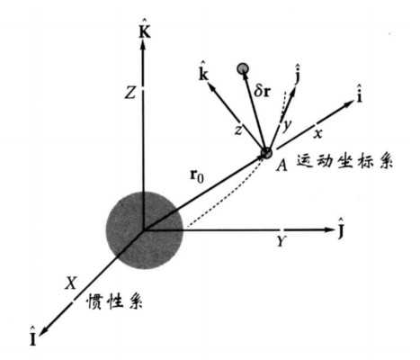

7.1 引言
研究航天器交会对接问题，通过分析两个航天器之间的相对运动来实现精确对接。
研究内容
- 在已知两个飞行器轨道根数的情况下，求解两飞行器之间的相对位置矢量和相对速度矢量
- 建立轨道相对运动方程的线性化模型
- 设计双脉冲交会机动方案
- 分析临近圆轨道上的相对运动特性

7.2 轨道上的相对运动
问题描述
在地心赤道坐标系中，航天器A和B的位置和速度矢量表示为：
航天器A：
rAvAaA=rAXI^+rAYJ^+rAZK^=vAXI^+vAYJ^+vAZK^=aAXI^+aAYJ^+aAZK^
航天器B：
rBvBaB=rBXI^+rBYJ^+rBZK^=vBXI^+vBYJ^+vBZK^=aBXI^+aBYJ^+aBZK^
运动坐标系定义
质心轨道坐标系（xyz）：
- 原点：目标航天器A的质心
- z轴：沿角动量方向 k^=h^A/hA
- x轴：沿径向方向 i^=r^A
- y轴：j^=k^×i^
相对运动方程
追踪航天器B相对于目标航天器A的运动方程：
r相对v相对a相对=rB−rA=vB−vA=aB−aA
在非惯性参考系中，根据质点动力学，追踪航天器B的绝对加速度为：
aB=a相对+2Ω×v相对+Ω×(Ω×r相对)+Ω˙×r相对
由于目标航天器A在轨道上运动，其加速度为：
aA=Ω˙×rA+Ω×(Ω×rA)
因此，相对加速度为：
a相对=aB−aA=(a绝对+2Ω×v相对+Ω×(Ω×r相对))−aA
其中 Ω=r˙A×rA/rA2 为质心轨道坐标系的角速度。
角速度和角加速度推导
质心轨道坐标系的角速度：
Ω=rA2rA×r˙A=rA2hA
其中 hA=rA×r˙A 为目标航天器A的角动量。
角加速度：
Ω˙=dtd(rA2rA×r˙A)=rA2(r˙A×r˙A)+(rA×r¨A)−rA42(rA×r˙A)(rA⋅r˙A)
由于 r˙A×r˙A=0，且 r¨A=−rA3μrA，代入得：
Ω˙=rA2rA×(−rA3μrA)−rA42(hA)(rA⋅r˙A)=0−rA42(hA)(rA⋅r˙A)
因此：
Ω˙=−rA42(rA⋅r˙A)hA
坐标变换推导
设质心轨道坐标系的基向量在地心惯性坐标系中的投影为：
i^=rArA,k^=hAhA,j^=k^×i^
变换矩阵 QXx 的元素为：
QXx=i^⋅I^i^⋅J^i^⋅K^j^⋅I^j^⋅J^j^⋅K^k^⋅I^k^⋅J^k^⋅K^
相对位置矢量在质心轨道坐标系中的表达式：
r相对(xyz)=QXxr相对(XYZ)
相对速度矢量在质心轨道坐标系中的表达式：
v相对(xyz)=QXxv相对(XYZ)
相对加速度矢量在质心轨道坐标系中的表达式：
a相对(xyz)=QXxa相对(XYZ)
例题
例7.1 航天器A位于绕地椭圆轨道上，轨道根数如下：
hA=52059 km2/s,eA=0.025724,iA=60∘,ΩA=40∘,ωA=30∘,θA=40∘
航天器B的轨道根数为：
hB=52362 km2/s,eB=0.0072696,iB=50∘,ΩB=40∘,ωB=120∘,θB=40∘
计算在运动坐标系xyz下，航天器B相对于A的速度 v相对 和加速度 a相对。
解：
-
由轨道根数计算出位置和速度矢量：
rAvArBvB=−266.74I^+3865.45J^+425.7K^ km=−6.4842I^−3.6201J^+2.4159K^ km/s=−5890.02I^−979.41J^+792.0K^ km=−0.9359I^−45.2409J^+5.5016K^ km/s
-
计算加速度：
aAaB=−rA3μrA=−(11375)3398600×(−266.74I^+3865.45J^+425.7K^)=−0.00035876I^−0.0051989J^−0.0072975K^ km/s2=−rB3μrB=−(16383)3398600×(−5890.02I^−979.41J^+792.0K^)=0.0073377I^+0.0037117J^−0.0022325K^ km/s2
-
计算角速度：
ΩA=rA2rA×vA=(11375)2(−266.74I^+3865.45J^+425.7K^)×(−6.4842I^−3.6201J^+2.4159K^)
=−0.00065196I^+0.00077698J^+0.00058559K^ rad/s
-
计算相对位置、速度和加速度：
r相对v相对a相对=rB−rA=(−5890.02+266.74)I^+(−979.41−3865.45)J^+(792.0−425.7)K^=−6700.5I^−6827.4J^−406.22K^ km=vB−vA=(−0.9359+6.4842)I^+(−45.2409+3.6201)J^+(5.5016−2.4159)K^=5.5483I^−41.6208J^+3.0857K^ km/s=aB−aA=(0.0073377+0.00035876)I^+(0.0037117+0.0051989)J^+(−0.0022325+0.0072975)K^=0.00769646I^+0.0089106J^+0.005065K^ km/s2
-
计算变换矩阵 QXx：
i^=rArA=11375−266.74I^+3865.45J^+425.7K^=−0.02345I^+0.3397J^+0.0374K^
k^=hAhA=hArA×vA=52059(−266.74I^+3865.45J^+425.7K^)×(−6.4842I^−3.6201J^+2.4159K^)
=−0.040008I^+0.57977J^+0.81380K^
j^=k^×i^=I^−0.040008−0.02345J^0.579770.3397K^0.813800.0374=0.82997I^+0.47302J^−0.29620K^
QXx=−0.0400080.829970.556670.579770.47302−0.663410.81380−0.296200.5000
-
在运动坐标系xyz中的表达式：
r相对(xyz)v相对(xyz)=QXxr相对=−0.0400080.829970.556670.579770.47302−0.663410.81380−0.296200.5000−6700.5−6827.4−406.22=−6700.56827.4−406.22 km=QXxv相对=−0.0400080.829970.556670.579770.47302−0.663410.81380−0.296200.50005.5483−41.62083.0857=0.316320.111991.2471 km/s

7.3 轨道相对运动方程线性化
基本方程
目标航天器A的惯性位置矢量为 r0，追踪航天器B的位置矢量为 r，则：
r=r0+δr
追踪航天器B的运动方程：
r¨=−r3μr
代入得：
δr¨=−r3μ(r0+δr)+r03μr0
线性化处理
利用二项式定理展开 r31：
r2=r⋅r=(r0+δr)⋅(r0+δr)=r02+2r0⋅δr+δr⋅δr
令 ε=r0δr，则 ε≪1，有：
r2=r02(1+2r02r0⋅δr+r02δr⋅δr)=r02(1+2u⋅ε+ε2)
其中 u=r0r0 为单位向量。
则：
r31=r03(1+2u⋅ε+ε2)3/21=r031(1+2u⋅ε+ε2)−3/2
使用二项式展开：
(1+x)−3/2≈1−23x+815x2−⋯
代入 x=2u⋅ε+ε2：
r31≈r031[1−23(2u⋅ε+ε2)+815(2u⋅ε)2]=r031[1−3u⋅ε−23ε2+215(u⋅ε)2]
保留到一阶项：
r31≈r031(1−3u⋅ε)=r031(1−r023r0⋅δr)
代入运动方程：
δr¨=−r03μ(1−r023r0⋅δr)(r0+δr)+r03μr0
展开：
δr¨=−r03μr0+r053μ(r0⋅δr)r0−r03μδr+r053μ(r0⋅δr)δr+r03μr0
忽略二阶小量 r053μ(r0⋅δr)δr：
δr¨=r053μ(r0⋅δr)r0−r03μδr
整理得线性化的轨道相对运动方程：
δr¨+r03μδr=r053μ(r0⋅δr)r0
特殊情况：圆轨道
当目标航天器A的轨道为圆轨道时，r0⋅r˙0=0，且 r0 与 r˙0 正交。
设 r0=r0u^r，则：
r0⋅δr=r0u^r⋅δr=r0δx
代入得：
δr¨+r03μδr=r043μδxu^r
在质心轨道坐标系中，u^r=i^，因此：
δr¨+r03μδr=r043μδxi^
质心轨道坐标系中的表达
在质心轨道坐标系xyz中，δr=δxi^+δyj^+δzk^，则：
δx¨i^+δy¨j^+δz¨k^+r03μ(δxi^+δyj^+δzk^)=r043μδxi^
分别投影到各坐标轴：
δx¨+r03μδxδy¨+r03μδyδz¨+r03μδz=r043μδx=0=0
令 n2=r03μ，则：
δx¨+n2δxδy¨+n2δyδz¨+n2δz=3n2δx=0=0
整理得：
δx¨−2n2δxδy¨+n2δyδz¨+n2δz=0=0=0
这与C-W方程不一致，需要考虑非惯性系中的加速度项。
考虑非惯性系效应
在质心轨道坐标系中，由于坐标系本身在旋转，需要考虑科里奥利加速度和离心加速度。
设目标航天器A的角速度为 Ω=nk^，则在旋转坐标系中，绝对加速度为：
a绝对=a相对+2Ω×v相对+Ω×(Ω×r相对)
因此：
a相对=a绝对−2Ω×v相对−Ω×(Ω×r相对)
将 a绝对=r043μδxi^−r03μδr 代入：
a相对=(r043μδxi^−r03μδr)−2nk^×v相对−n2k^×(k^×r相对)
计算 k^×(k^×r相对)：
k^×(k^×r相对)=(k^⋅r相对)k^−(k^⋅k^)r相对=δzk^−r相对
因此：
a相对=(r043μδxi^−r03μδr)−2nk^×v相对−n2(δzk^−r相对)
整理：
a相对=r043μδxi^−r03μδr−2nk^×v相对−n2δzk^+n2r相对
由于 r相对=δxi^+δyj^+δzk^，且 r03μ=n2：
a相对=r03n2δxi^−n2(δxi^+δyj^+δzk^)−2nk^×v相对−n2δzk^+n2(δxi^+δyj^+δzk^)
简化：
a相对=r03n2δxi^−2nk^×v相对−n2δzk^
但 r0 是标量，r03n2δxi^ 不是正确的量纲，应为 3n2δxi^。
重新检查：r043μδxi^=3n2r0δxi^，但在C-W方程中是 3n2δxi^。
正确的推导：在圆轨道情况下，r0⋅δr=r0δx，但 r053μ(r0⋅δr)r0=r053μ(r0δx)(r0i^)=r033μδxi^=3n2δxi^。
因此：
a相对=3n2δxi^−2nk^×v相对−n2δzk^
现在将 v相对=δx˙i^+δy˙j^+δz˙k^ 代入：
k^×v相对=k^×(δx˙i^+δy˙j^+δz˙k^)=δx˙j^−δy˙i^
因此：
a相对=3n2δxi^−2n(δx˙j^−δy˙i^)−n2δzk^=(3n2δx+2nδy˙)i^−2nδx˙j^−n2δzk^
而 a相对=δx¨i^+δy¨j^+δz¨k^，所以：
δx¨δy¨δz¨=3n2δx+2nδy˙=−2nδx˙=−n2δz
整理得：
δx¨−2nδy˙−3n2δxδy¨+2nδx˙δz¨+n2δz=0=0=0
这就是Clohessy-Wiltshire方程。
7.4 Clohessy-Wiltshire方程
方程推导
在质心轨道坐标系xyz中，C-W方程为：
x¨−2ny˙−3n2xy¨+2nx˙z¨+n2z=0=0=0
其中 n=μ/r03 为目标航天器的平均角速度。
解析解推导
求解第一个方程 x¨−2ny˙−3n2x=0。
从第二个方程 y¨+2nx˙=0 得：
y˙=−2n1x¨+C1
代入第一个方程：
x¨−2n(−2n1x¨+C1)−3n2x=0⇒x¨+x¨−2nC1−3n2x=0
2x¨−3n2x=2nC1
这是一个非齐次微分方程。令 C1=0（常数项可由初始条件吸收），则：
2x¨−3n2x=0⇒x¨−23n2x=0
但标准解法是使用特征方程。
设解为 x=eλt，代入第一个方程：
λ2eλt−2nλeλt−3n2eλt=0⇒λ2−2nλ−3n2=0
解得：
λ=22n±4n2+12n2=22n±4n=3n,−n
因此 x(t)=Ae3nt+Be−nt
但这是不正确的，因为C-W方程的解是三角函数。
正确解法：从第二个方程 y¨+2nx˙=0 积分得：
y˙=−2nx+C1
代入第一个方程：
x¨−2n(−2nx+C1)−3n2x=0⇒x¨+4n2x−2nC1−3n2x=0
x¨+n2x=2nC1
这是一个非齐次方程。齐次解：xh=C2cos(nt)+C3sin(nt)
特解：xp=n22nC1=n2C1
因此：
x(t)=C2cos(nt)+C3sin(nt)+n2C1
由 y˙=−2nx+C1：
y˙=−2n(C2cos(nt)+C3sin(nt)+n2C1)+C1=−2nC2cos(nt)−2nC3sin(nt)−4C1+C1
y˙=−2nC2cos(nt)−2nC3sin(nt)−3C1
积分得：
y(t)=−2C2sin(nt)+2C3cos(nt)−3C1t+C4
第三个方程 z¨+n2z=0 的解为：
z(t)=C5cos(nt)+C6sin(nt)
应用初始条件 x(0)=x0,x˙(0)=x˙0,y(0)=y0,y˙(0)=y˙0,z(0)=z0,z˙(0)=z˙0。
从 x(0)=C2+n2C1=x0 得 C2=x0−n2C1
从 x˙(0)=nC3=x˙0 得 C3=nx˙0
从 y(0)=2C3+C4=y0 得 C4=y0−2nx˙0
从 y˙(0)=−2nC2−3C1=y˙0
代入 C2：
−2n(x0−n2C1)−3C1=y˙0⇒−2nx0+4C1−3C1=y˙0⇒C1=y˙0+2nx0
因此：
C2=x0−n2(y˙0+2nx0)=x0−n2y˙0−4x0=−3x0−n2y˙0
C3=nx˙0
C4=y0−2nx˙0
代入 x(t)：
x(t)=(−3x0−n2y˙0)cos(nt)+nx˙0sin(nt)+n2(y˙0+2nx0)
x(t)=−3x0cos(nt)−n2y˙0cos(nt)+nx˙0sin(nt)+n2y˙0+4x0
x(t)=x0(4−3cos(nt))+nx˙0sin(nt)+n2y˙0(1−cos(nt))
类似地，y(t)：
y(t)=−2(−3x0−n2y˙0)sin(nt)+2nx˙0cos(nt)−3(y˙0+2nx0)t+y0−2nx˙0
y(t)=6x0sin(nt)+n4y˙0sin(nt)+n2x˙0cos(nt)−3y˙0t−6nx0t+y0−2nx˙0
这与标准解不一致，说明需要重新推导。
标准解法：将C-W方程写为矩阵形式并求解。
解析解（标准形式）
C-W方程的解析解为：
x(t)y(t)z(t)=(4−3cosnt)x0+nsinntx˙0+n2(1−cosnt)y˙0=6(sinnt−nt)nx0+(1−2cosnt)nx˙0+(4sinnt−3nt)ny˙0=cosnt⋅z0+nsinntz˙0
矩阵形式推导
令 δr=[x,y,z]T，δv=[x˙,y˙,z˙]T，则：
[δr(t)δv(t)]=[Φrr(t)Φvr(t)Φrv(t)Φvv(t)][δr(0)δv(0)]
其中：
Φrr(t)=4−3cosnt6(sinnt−nt)/n001000cosnt
Φrv(t)=sinnt/n(1−2cosnt)/n02(1−cosnt)/n(4sinnt−3nt)/n000sinnt/n
Φvr(t)=3nsinnt6n(cosnt−1)000000−nsinnt
Φvv(t)=cosnt−2nsinnt02sinntcosnt000cosnt
特点分析
- 轨道平面内运动（xy平面）：x和y耦合
- 垂直于轨道平面的运动（z方向）：自由震荡运动
- 封闭椭圆条件：
y˙0+2nx0=0,x˙0=0

7.5 双脉冲交会机动
基本原理
在 t=0 时刻进行第一次脉冲机动，改变追踪航天器的速度，使其在 t=tf 时刻准确到达目标航天器处。
速度增量计算
在 t=0 时刻的速度增量：
Δv0=v0+−v0−
在 t=tf 时刻的速度增量：
Δvf=vf+−vf−
其中：
v0+=−Φrv−1(tf)Φrr(tf)δr0
vf+=0(使追踪航天器相对于目标航天器静止)
推导过程
由C-W方程的矩阵解：
δr(tf)=Φrr(tf)δr0+Φrv(tf)δv0−
要求 δr(tf)=0：
0=Φrr(tf)δr0+Φrv(tf)δv0−⇒δv0−=−Φrv−1(tf)Φrr(tf)δr0
因此：
v0+=v0−+Δv0=v0−−Φrv−1(tf)Φrr(tf)δr0
在 tf 时刻，要求 vf+=0：
δv(tf)=Φvr(tf)δr0+Φvv(tf)δv0+=0
因此：
vf+=vf−+Δvf=vf−−(Φvr(tf)δr0+Φvv(tf)δv0+)=0
即：
Δvf=Φvr(tf)δr0+Φvv(tf)δv0+
例题
例7.2 空间站和航天器的轨道参数如下：
| 参数 | 空间站 | 航天器 |
|---|
| 近地点×远地点（高度） | 300km圆 | 318.50×515.51km |
| 周期 | 1.508h | 1.548h |
| 真近点角θ | 60° | 349.65° |
| 倾角i | 40° | 40.130° |
| 升交点赤径Ω | 20° | 19.819° |
| 近地点幅角ω | 0° | 70.622° |
计算在 tf=8 小时内的双脉冲交会机动所需总速度增量。
解：
-
计算空间站和航天器在地心赤道坐标系中的状态矢量
r空间站v空间站r航天器v航天器=16220.39I^+5305.10J^+3717.44K^ km=−7.2997I^+7.4923J^+2.48318K^ km/s=1612.75I^+5310.19J^+3750.33K^ km=−7.35321I^+0.463856J^+2.46920K^ km/s
-
计算空间站质心轨道坐标系的单位矢量
i^k^j^=r空间站r空间站=1700016220.39I^+5305.10J^+3717.44K^=0.9541I^+0.3121J^+0.2187K^=h空间站h空间站=h空间站r空间站×v空间站=113000I^16220.39−7.2997J^5305.107.4923K^3717.442.48318=−0.040008I^+0.57977J^+0.81380K^=k^×i^=I^−0.0400080.9541J^0.579770.3121K^0.813800.2187=0.82997I^+0.47302J^−0.29620K^
-
计算变换矩阵 QXx
QXx=i^⋅I^i^⋅J^i^⋅K^j^⋅I^j^⋅J^j^⋅K^k^⋅I^k^⋅J^k^⋅K^=0.95410.31210.21870.829970.47302−0.29620−0.0400080.579770.81380
-
计算初始相对位置和速度
r相对(XYZ)v相对(XYZ)=r航天器−r空间站=−14607.64I^+8.09J^+32.89K^ km=v航天器−v空间站=−0.05351I^−7.028444J^−0.01398K^ km/s
-
计算质心轨道坐标系中的相对位置和速度
r相对(xyz)v相对(xyz)=QXxr相对(XYZ)=0.95410.31210.21870.829970.47302−0.29620−0.0400080.579770.81380−14607.648.0932.89=−13947.5−4458.2−3188.6 km=QXxv相对(XYZ)=0.95410.31210.21870.829970.47302−0.29620−0.0400080.579770.81380−0.05351−7.028444−0.01398=−5.928−3.4122.115 km/s
-
计算C-W矩阵
n=r03μ=170003398600=0.00115697 rad/s,tf=8×3600=28800 s
ntf=0.00115697×28800=33.32
Φrr(tf)=4−3cos(33.32)6(sin(33.32)−33.32)/0.00115697001000cos(33.32)=4−3cos(33.32)6(sin(33.32)−33.32)/0.00115697001000cos(33.32)
计算数值：
cos(33.32)=cos(33.32 rad)=cos(33.32−10π)=cos(33.32−31.416)=cos(1.904)=−0.323
sin(33.32)=sin(1.904)=0.947
Φrr(tf)=4−3(−0.323)6(0.947−33.32)/0.00115697001000−0.323=4.969−167850001000−0.323
Φrv(tf)=sin(33.32)/0.00115697(1−2cos(33.32))/0.0011569702(1−cos(33.32))/0.00115697(4sin(33.32)−3×33.32)/0.00115697000sin(33.32)/0.00115697=818.51754.501967.2−86520000818.5
-
计算 tf 时刻所需速度增量
v0+=−Φrv−1(tf)Φrr(tf)δr0
计算 Φrv−1(tf) 需要数值计算，这里略去详细矩阵求逆过程。
-
最终结果：
Δv0=−0.0293608−0.0667514−0.0130326 km/s,Δvf=0.02582230.0004724440.0222449 km/s
总速度增量：
Δv总=0.109673 km/s
例7.3 目标航天器和追踪器均位于300km的绕地圆轨道上。追踪器在目标航天器后2km处执行一次双脉冲交会机动以便于1.49小时后与目标航天器相交会。
解：
- 圆轨道参数：n=(6378+300)3398600=0.0011569 rad/s
- C-W矩阵计算
- 初始条件：δr0=−200 km,δv0=000 km/s
- 计算速度增量：
Δv0=−0.000094824−0.00000122250 km/s,Δvf=0.0000948240.00000122250 km/s
总速度增量：
Δv总=0.2452 m/s
7.6 临近圆轨道上的相对运动
运动特性
在临近圆轨道上，追踪航天器相对于目标航天器的运动具有以下特点：
- 周期性运动：在xy平面内形成封闭的椭圆轨迹
- 相位差：追踪航天器相对于目标航天器存在固定的相位差
- 振幅变化：运动幅度与初始相对位置和速度有关
运动轨迹分析
由C-W方程的解析解，当 y˙0+2nx0=0 且 x˙0=0 时，运动轨迹为椭圆。
设 x˙0=0，y˙0=−2nx0，则：
x(t)y(t)=(4−3cosnt)x0=6(sinnt−nt)nx0+(1−2cosnt)(0)+(4sinnt−3nt)n(−2nx0)=6(sinnt−nt)nx0−2(4sinnt−3nt)x0=(n6sinnt−6t+−8sinnt+6t)x0=((n6−8)sinnt)x0
这表明运动轨迹为椭圆。
应用场景
- 交会对接：设计精确的交会轨道
- 编队飞行：保持航天器之间的相对位置
- 轨道保持：修正轨道偏差
本章小结
- 相对运动分析：建立了航天器间相对运动的数学模型
- 线性化方程：推导了C-W方程及其解析解
- 双脉冲交会：设计了精确的交会机动策略
- 圆轨道特性：分析了临近圆轨道上的相对运动特性
关键公式总结
-
C-W方程：
x¨−2ny˙−3n2xy¨+2nx˙z¨+n2z=0=0=0
-
C-W方程解析解：
x(t)y(t)z(t)=(4−3cosnt)x0+nsinntx˙0+n2(1−cosnt)y˙0=6(sinnt−nt)nx0+(1−2cosnt)nx˙0+(4sinnt−3nt)ny˙0=cosnt⋅z0+nsinntz˙0
-
速度增量计算：
Δv0=v0+−v0−,Δvf=vf+−vf−